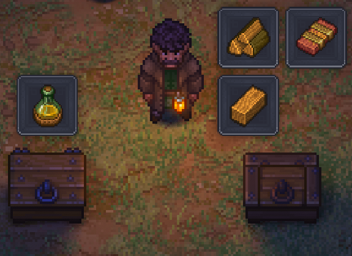

QuickStash · Graveyard Keeper 2
Every chest in reach, at once
Each container shows what it received, then the bubble fades. Tools and equipped gear stay with you.
Each container shows what it received, then the bubble fades. Tools and equipped gear stay with you.
